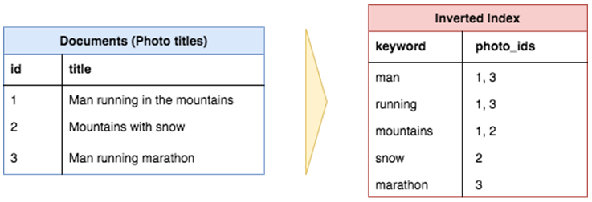

Работа веб-приложения извнутри
Приведенная диаграмма хорошо представляет архитектуру веб приложения Storyblocks. И прежде, чем углубиться в каждый компонент стоит прочитать как это работает.
Пользователь ищет в Google "красивый туман и солнечные лучи в лесу". Первый результат, выдается из Storyblocks, сайта со стоком фотографий. Пользователь щелкает результат, который перенаправляет его браузер на страницу сведений об изображении. Под капотом браузер пользователя отправляет запрос на DNS-сервер, чтобы узнать, как связаться со Storyblocks, а затем отправляет туда запрос.
Запрос попадает в балансировщик нагрузки, который случайным образом выбирает один из 10 или более веб-серверов, на которых работает сайт, для обработки запроса. Веб-сервер ищет некоторую информацию об изображении из нашей службы кэширования и извлекает данные о нем из базы данных. Мы замечаем, что цветовой профиль для изображения еще не вычислен, поэтому мы отправляем задание «цветовой профиль» в нашу очередь заданий, которое наши серверы заданий будут обрабатывать асинхронно, соответствующим образом обновляя базу данных с результатами.
Затем мы пытаемся найти похожие фотографии, отправляя запрос в наш сервис полнотекстового поиска, используя заголовок фотографии в качестве входных данных. Пользователь уже зарегестрировал в Storyblocks, поэтому мы ищем информацию о его учетной записи в нашем сервисе учетных записей. Наконец, мы запускаем событие просмотра страницы для наших Amazon Kinesis Data Firehose данных, которое должно быть записано в нашей облачной системе хранения и в конечном итоге загружено в наше хранилище данных, которое аналитики используют для ответа на вопросы о бизнесе.
Теперь сервер рендерит HTML представление и отправляет его обратно в браузер пользователя, проходя сначала через балансировщик нагрузки. Страница содержит ресурсы Javascript и CSS, которые мы загружаем в нашу облачную систему хранения, которая подключена к нашей CDN, поэтому браузер пользователя связывается с CDN для получения контента. Наконец, браузер визуально отображает страницу, чтобы пользователь мог ее увидеть.
Компоненты веб-приложения
1. DNS
DNS это «система доменных имен», технология, которая делает возможной всемирную паутину. На самом базовом уровне DNS обеспечивает поиск ключей/значений от имени домена (например, google.com) до IP-адреса (например, 85.129.83.120), который необходим для того, чтобы ваш компьютер перенаправил запрос на соответствующий сервер. По аналогии с телефонными номерами разница между доменным именем и IP-адресом — это разница между «позвонить Джону Доу» и «позвонить по номеру 201-867–5309». Точно так же, как в старые времена вам требовалась телефонная книга для поиска номера Джона, вам нужен DNS для поиска IP-адреса домена. Так что вы можете думать о DNS как о телефонной книге для Интернета.
2. Балансировщик нагрузки
Прежде чем углубляться в детали балансировки нагрузки, нам нужно сделать шаг назад, чтобы обсудить горизонтальное и вертикальное масштабирование приложений. Какие они и в чем разница? Горизонтальное масштабирование означает, что вы масштабируете, добавляя больше машин в пул ресурсов, тогда как «вертикальное» масштабирование означает, что вы масштабируете, добавляя больше мощности (например, ЦП, ОЗУ) к существующей машине.
В веб-разработке вы почти всегда хотите масштабироваться по горизонтали, потому что это надежнее. Серверы могут крашиться. Могу быть проблемы с сетью. Целые центры обработки данных иногда отключаются. Наличие более одного сервера позволяет вам планировать перебои в работе, чтобы ваше приложение продолжало работать. Другими словами, ваше приложение «отказоустойчиво». Наконец, вы можете достичь такого масштаба, при котором вертикальное масштабирование больше невозможно. В мире нет компьютера, достаточно большого, чтобы выполнять все вычисления вашего приложения.
Вернемся к балансировщикам нагрузки. Это технология, который делает возможным горизонтальное масштабирование. Они направляют входящие запросы на один из многих серверов приложений, которые обычно являются клонами/зеркальными изображениями друг друга, и отправляют ответ от сервера приложений обратно клиенту. Любой из них должен обрабатывать запрос одинаково. Задача балансировщика просто распределить запросы по набору серверов, чтобы ни один из них не был перегружен.
3. Ноды (Серверы веб-приложений) и Кластер
Сервер веб-приложений выполняет основную бизнес-логику, которая обрабатывает запрос пользователя и отправляет обратно HTML в браузер пользователя. Для выполнения своей работы он обычно взаимодействуют с разнообразной внутренней инфраструктурой, такой как базы данных, уровни кэширования, очереди заданий, службы поиска, другие микросервисы, очереди данных и многое другое. Обычно есть по крайней мере два, а часто и намного больше серверов, подключенных к балансировщику нагрузки для обработки пользовательских запросов, которые назваются кластеров.
Кластер - это группа серверов (именуемых "нодами"), которые работают вместе, выполняют общие задачи и клиенты видят их как одну систему. Благодаря специальному оборудованию и программному обеспечению, обеспечивается такой уровень защиты от сбоев, который невозможен при использовании одного сервера. В случае выхода из строя одного из серверов, задачи, которые он выполнял, берёт на себя другой сервер и работоспособность системы восстанавливается. При этом пользователи замечают лишь временную потерю работоспособности, а если приложение написано грамотно, то и вовсе не замечают (кроме небольшой паузы).
4. Серверы баз данных
Каждое современное веб-приложение использует одну или несколько баз данных для хранения информации. Базы данных предоставляют способы определения ваших структур данных, вставки новых данных, поиска существующих данных, обновления или удаления существующих данных, выполнения вычислений над данными и многого другого.
5. Сервис кеширования
Сервис кэширования предоставляет простое хранилище данных типа ключ/значение, которое позволяет сохранять и искать информацию за время близкое к O(1). Приложения обычно используют службы кэширования для сохранения результатов дорогостоящих вычислений, чтобы можно было извлечь результаты из кеша, а не пересчитывать их в следующий раз, когда они понадобятся. Приложение может кэшировать результаты запроса к базе данных, вызовов внешних служб, HTML для заданного URL-адреса и многого другого. Вот несколько примеров из реальных приложений:
- Google кэширует результаты поиска по общим поисковым запросам, таким как «собака» или «Тейлор Свифт», а не пересчитывает их каждый раз.
- Facebook кэширует большую часть данных, которые вы видите при входе в систему, таких как данные сообщений, друзья и т. д.
- Storyblocks кэширует вывод HTML из серверного рендеринга React, результатов поиска, результатов с опережением ввода и т. д.
Две наиболее распространенные серверные технологии кэширования - это Redis и Memcache.
6. Очередь заданий и серверы
Большинству веб-приложений необходимо выполнять какую-то работу асинхронно, за кулисами, которая напрямую не связана с ответом на запрос пользователя. Например, Google необходимо сканировать и индексировать весь Интернет, чтобы возвращать результаты поиска. Это не происходит каждый раз при поиске. Вместо этого он асинхронно сканирует Интернет, попутно обновляя поисковые индексы.
В очередях заданий хранится список заданий, которые необходимо запускать асинхронно. Самыми простыми из них являются очереди «первым пришел - первым обслужен» (FIFO), хотя большинству приложений в конечном итоге требуется какая-то система очередей с приоритетом.
Серверы заданий обрабатывают задания. Они опрашивают очередь заданий, чтобы определить, есть ли над чем поработать, и если есть, извлекают задание из очереди и выполняют его.
7. Служба полнотекстового поиска
Многие, если не большинство веб-приложений поддерживают какую-то функцию поиска, когда пользователь вводит текст (часто называемый «запросом»), и приложение возвращает наиболее «релевантные» результаты. Технология, обеспечивающая эту функциональность, обычно называется « полнотекстовым поиском », который использует инвертированный индекс для быстрого поиска документов, содержащих ключевые слова запроса.
Пример, показывающий, как три заголовка документа преобразуются в инвертированный индекс для облегчения быстрого поиска от определенного ключевого слова к документам с этим ключевым словом в заголовке. Обратите внимание, что общие слова, такие как «in», «the», «with» и т. Д. (Называемые стоп-словами), обычно не включаются в инвертированный индекс.
Хотя можно выполнять полнотекстовый поиск непосредственно из некоторых баз данных (например, MySQL поддерживает полнотекстовый поиск), обычно запускается отдельная «служба поиска», которая вычисляет и хранит инвертированный индекс и предоставляет интерфейс запросов. Самой популярной платформой полнотекстового поиска сегодня является Elasticsearch, хотя есть и другие варианты, такие как Sphinx или Apache Solr.
8. Миросервисы
Как только приложение достигнет определенного масштаба, вероятно, появятся определенные «сервисы», которые будут запускаться как отдельные приложения. Они не открыты для внешнего мира, но приложение и другие службы взаимодействуют с ними. Например, в Storyblocks есть несколько оперативных и плановых сервисов:
- Сервис учетной записи хранит пользовательские данные на всех наших сайтах, что позволяет нам легко предлагать возможности перекрестных продаж и создавать более унифицированный пользовательский интерфейс.
- Сервис контента хранит метаданные для всего нашего видео-, аудио- и графического контента. Он также предоставляет интерфейсы для загрузки контента и просмотра истории загрузок.
- Платежный сервис предоставляет интерфейс для выставления счетов по кредитным картам клиентов.
- Сервис HTML → PDF предоставляет простой интерфейс, который принимает HTML и возвращает соответствующий документ PDF.
9. Данные
Cегодня компании живут и умирают в зависимости от того, насколько хорошо они используют данные. Почти каждое приложение в наши дни, когда оно достигает определенного масштаба, использует конвейер данных, чтобы гарантировать, что данные могут быть собраны, сохранены и проанализированы. Приложение отправляет данные, обычно события о взаимодействиях с пользователем, в потоковый интерфейс для приема и обработки данных. AWS Kinesis и Kafka - две наиболее распространенные технологии для этой цели. Если наборы данных достаточно велики, для анализа может потребоваться Hadoop-подобная технология NoSQL MapReduce.
10. Облачное хранилище
«Облачное хранилище — это простой и масштабируемый способ хранения, доступа и обмена данными через Интернет». Вы можете использовать его для хранения и доступа более или менее ко всему, что вы храните в локальной файловой системе, с преимуществами возможности взаимодействия с ней через RESTful API через HTTP. Amazon Web Services S3, безусловно, является самым популярным облачным хранилищем, доступным сегодня, и то, на которое мы широко используем здесь, в Storyblocks, для хранения наших видео, фото и аудио активов, наших CSS и Javascript, данных наших пользовательских событий и многого другого.
11. CDN
CDN означает «Сеть доставки контента», и эта технология обеспечивает способ обслуживания таких ресурсов, как статический HTML, CSS, Javascript и изображения, через Интернет намного быстрее, чем их обслуживание с одного исходного сервера. Он работает, распределяя контент по множеству «пограничных» серверов по всему миру, так что пользователи в конечном итоге загружают ресурсы с «пограничных» серверов, а не с исходного сервера. Например, на изображении ниже пользователь из Испании запрашивает веб-страницу с сайта с исходными серверами в Нью-Йорке, но статические ресурсы для страницы загружаются с «пограничного» сервера CDN в Англии, что предотвращает многие медленные трансатлантические HTTP запросы.